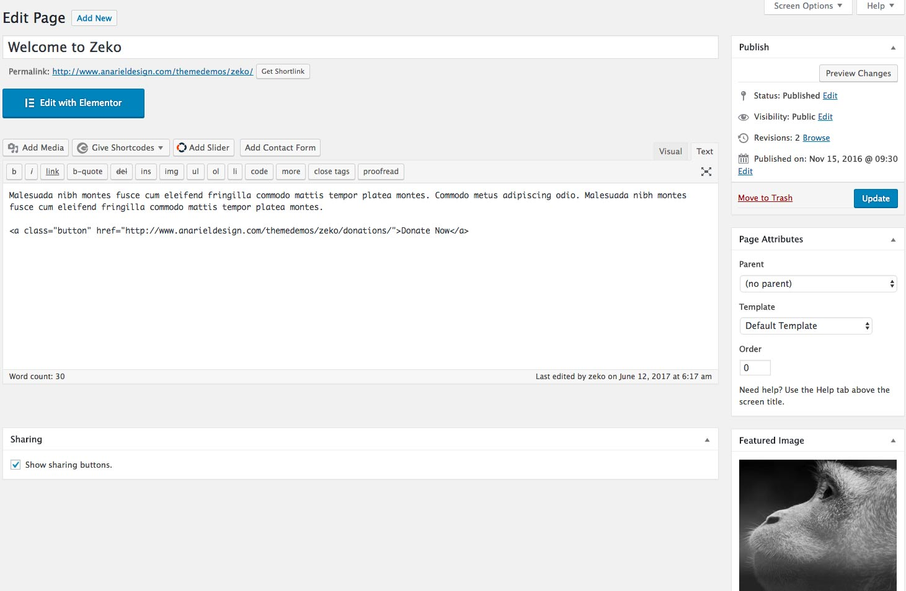

2. Front Page
Front page is consisted of the front page editor content with hero/featured image, front page child pages and 4 content panels. In the front page editor all kinds of content can be added and using Customizer you can add up to 4 content panels to your front page.
4 panels can be combined in different ways and not all have to be used. Panel areas that you leave empty will not be displayed on the front page.
To start creating your front page navigate to the Pages and create a new page and name it (in the demo we named it "Welcome to Zeko.").
By default WordPress on the Front Page displays your latest posts.
If you want to set the page you created as your front page just navigate to the Settings » Reading and instead of the default "Front Page Displays: - Your latest posts" choose "A static page" and from the drop-down choose the page you created. From the Posts Page drop-down select a page you want to use as your blog page.
2.1 Hero Image - Page Content
Navigate to Pages and open the page you created earlier ("Welcome to Zeko."). Hero image is featured image and caption text is text added to the editor.

Content we added inside the editor is:
If you want to add the button anywhere on your website just copy and paste this code and instead of the "#" sign add your own link:
Navigate to Appearance » Customize » Theme Options » Hero Image where you'll find options for the hero image. You can decide to hide the hero image or to add image opacity.
Featured Slider
You can add featured slider instead of the hero image or have both. Navigate to Appearance » Customizer » Theme Options » Featured Slider where you'll be able to activate slider, choose the number of posts and category.
2.2 Child Pages
If you want to show child pages under the hero image/slider content you'll need to create child pages.
Add the content to the editor, upload a featured image if you wish and inside the Page Attributes » Parent choose the page you created earlier as your front page ("Welcome to Zeko."). You can have up to 10 child pages on the front page.
If child page has a featured image, content will be devided in two columns. In case child page doesn't have a featured image, content will fill the whole container.
2.3 Panel 1 - 4
Zeko allows you to build a front page comprised of content from different pages on your site. It has four different panels you can assign pages to. Each panel is comprised of the page you choose to show.
First navigate to Appearance » Customize » Theme Options and open a Panel 1. Here you'll find all settings for the first content panel.
2.2.1 Panel Content
Select a page whose content should be displayed in this panel. If you don't select a page this panel will not be displayed. If you haven't created any pages yet, first navigate to the Pages and open a new page you want to feature inside the first panel.
If you want to show 3 latest posts on your front page, select your blog page inside the panel and it will automatically pull your latest posts.
Inside the panel layout you can decide how to position your content. If a page has a featured image,you can position your content to the right, left or under the image. If a page doesn't have a featured image, content will fill the full width block.
2.4 Image above the footer
Navigate to the Appearance » Customize » Theme Options » Footer Image. Here you can upload image and add the caption text.
2.5 Custom CSS Styles
To style your pages individually, you can use extra CSS styles in your page text/HTML editor.
List with check icon
Button
* Using the Widget Visibility feature by installing - Widget Visibility plugin you can display different widgets inside the footer on different pages. Widget Visibility module enables you to configure widgets to appear only on certain pages (or be hidden on certain pages) by using the Visibility panel.